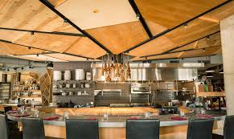

Top Neigborhood Dining
Explore the Neigborhood Dining
-

Art of the Table
Art of the Table, located in Seattle, stands out as a restaurant deeply committed to the craft of exquisite dining, emphasizing seasonal and locally-sourced ingredients. The menu reflects a creative and elegant approach to cooking, with offerings that showcase the best of what the Pacific Northwest has to offer.
Learn More -

Betty
Betty is a charming restaurant located in Seattle's Queen Anne neighborhood, known for its bistro-style food and seasonal menu that changes to offer new delights with each season. The establishment has built a reputation among locals for its cozy atmosphere and high-quality dishes, including signature offerings like oven-roasted chicken, bouillabaisse, and beet salad.
Learn More -

Cafe Campagne
Café Campagne, situated in the heart of Seattle's vibrant Pike Place Market, is a quintessential French café and bistro that has charmed locals and visitors alike since its opening in 1994. Tucked away in the quaint courtyard of the Inn at the Market, this establishment provides a serene escape from the bustling market atmosphere, offering a slice of France in the Pacific Northwest.
Learn More